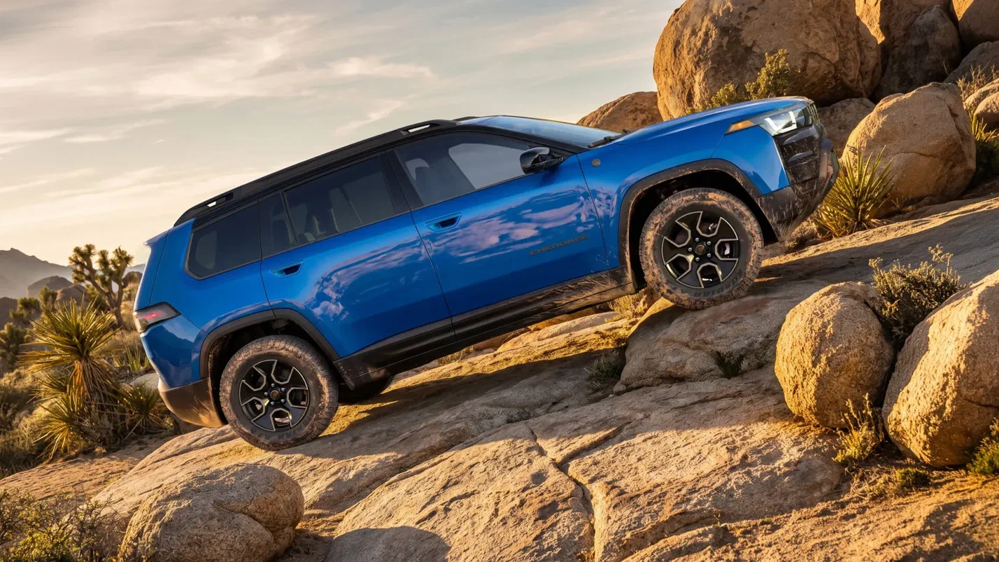
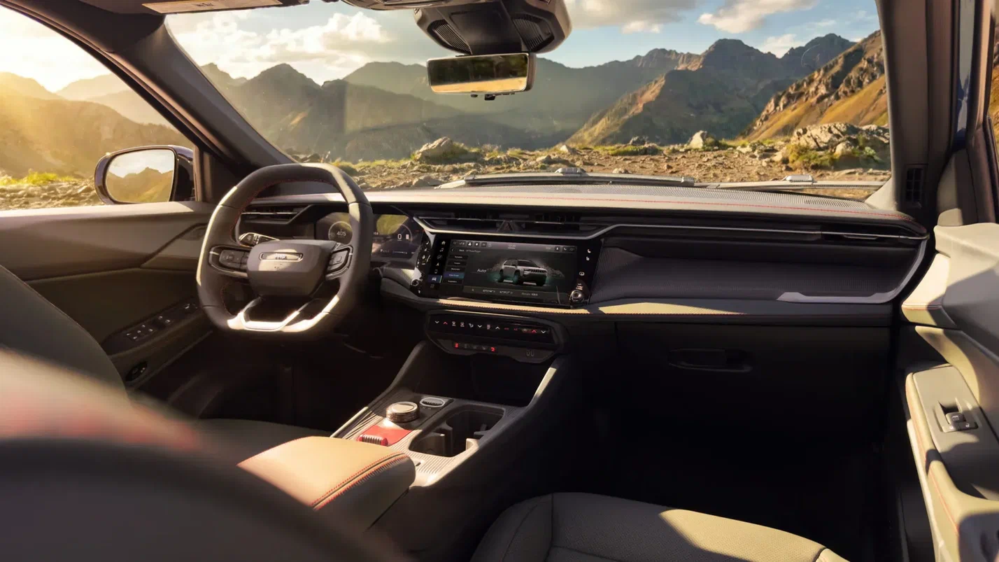

Jeep Cherokee стал более внедорожным с «понижайкой» и увеличенным клиренсом
Компания Jeep расширила семейство Cherokee за счёт новой модификации Trailhawk, лучше подготовленной к бездорожью, чем обычные кроссоверы. Такой Cherokee будет отличаться не только внешними деталями, но и конструктивом, так как, к примеру, получил новую систему полного привода с понижающим рядом. Производство Cherokee Trailhawk запустят в конце текущего года, заказы принимаются по цене от 44 625 долларов.

Jeep Cherokee Trailhawk получил новые бамперы с оптимизированной геометрией и перенастроенную подвеску с увеличением дорожного просвета на 25 миллиметров (до 230 миллиметров). В совокупности эти доработки привели к заметному улучшению углов въезда и съезда: первый увеличился с 19,6 до 28,8 градуса, второй — с 29,4 до 31,8 градуса. Кроме того, кроссовер укомплектовали оригинальными амортизаторами и пружинами.

Среди прочих доработок компания упоминает 17-дюймовые диски с вседорожными покрышками, буксировочные проушины, предотвращающую блики наклейку на капоте, а также несколько защитных пластин для днища. Cherokee Trailhawk может преодолевать броды глубиной до 610 миллиметров.

В качестве силового агрегата задействована гибридная система на базе 1,6-литровой «турбочетвёрки», которая
развивает 213 л.с. и 312 Нм. Также предусмотрены система полного привода Jeep Active Drive II (наличие
раздаточной коробки в Jeep называют уникальным для сегмента), блокировка заднего дифференциала и три
внедорожных режима работы ездовой электроники.
Более крупный Jeep Grand Cherokee в скором времени должен
обзавестись исполнением с самым мощным мотором, однако инсайдеры уверяют, что в линейку двигателей этой
модели не вернётся V8. Вместо него решено задействовать «турбошестёрку» из семейства Hurricane.